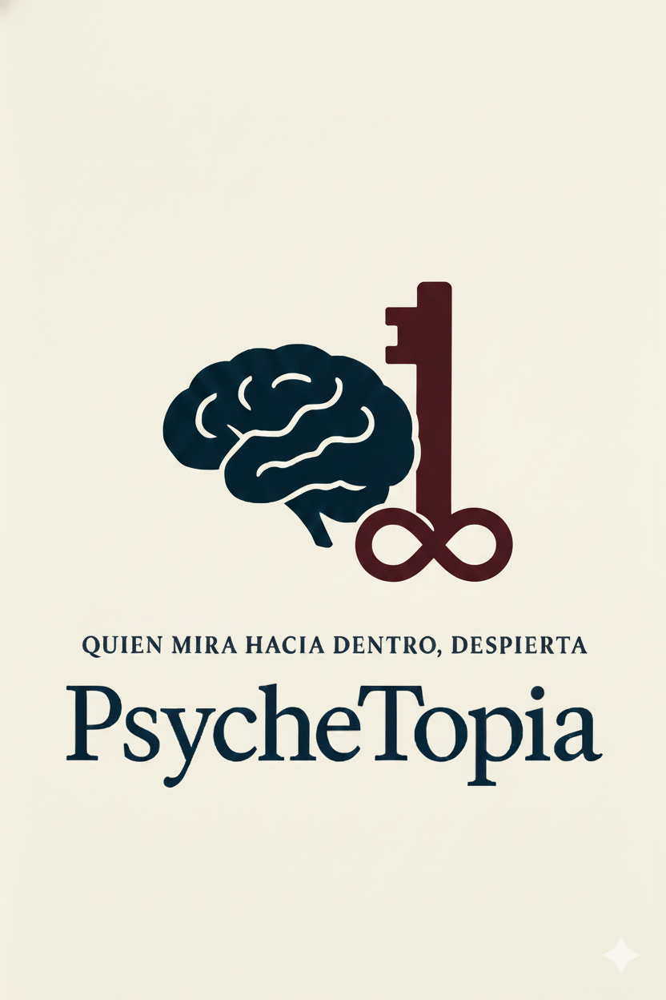

Listen to a short welcome as we dive into the depths of the psyche.
Reflections and analysis of psychological complexes.
Key psychological and philosophical frameworks explored.
The dark chamber—exploring the unredeemable mind.
Voice recordings and poetic ruminations from the soul.
Film interpretations and documentary recommendations.
A cultural autopsy of our dark obsessions; analyzing the hidden archives of the mind and the devils we create in our own image.
PsycheTopia is an introspective space for minds who dare to dive deep. Here, psychology, philosophy, dark reflections, and poetic musings meet. It is a sanctuary for analysis, self-exploration, and the misunderstood. Each section opens a door into the layered mind—yours, mine, and society's.